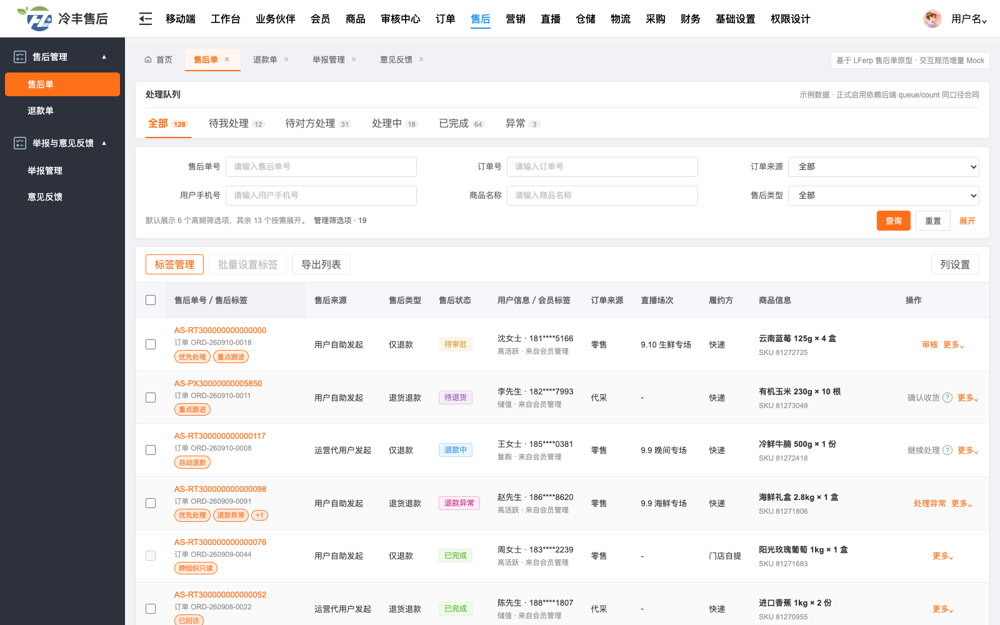
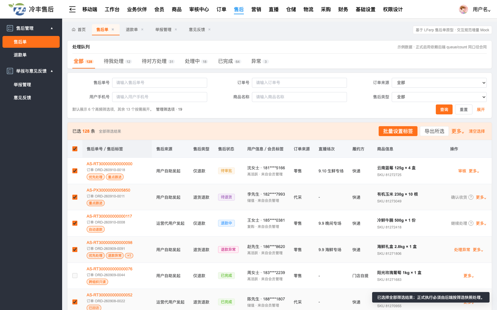

先让评审者看懂页面，再讨论组件怎么实现
本页把需求结论直接标到 LFerp 售后原型上。它不是另画一套后台，而是解释现有页面中主状态、搜索、单行模型、多选和操作列为什么这样组织。
本次决策：售后列表以“一张售后单／一件商品记录”为独立处理对象，因此一条记录一行；主状态位于通用搜索上方，但只有后端能够提供同口径队列和数量时才启用。
目标原型 · 默认态
图 1 / 4
页面结构：先选择工作队列，再用搜索精确定位
编号落在真实 LFerp Mock 的对应区域上。研发和产品可按 1 → 6 的顺序检查页面是否符合统一骨架。

1 2 3 4 5 6主状态不会锁定表格列主状态配置、普通搜索配置、列配置分别演进。
无筛选项时不留空壳零搜索字段直接移除搜索容器和无意义留白。
标签不固定右侧右侧稳定区只保留真正需要持续可发现的操作。
目标原型 · 选择态
图 2 / 4
多选：范围必须说清楚，工具栏不能把表格推来推去
进入选择态后，普通结果工具栏在同一高度切换为选择栏；当前页与全部筛选结果采用两步确认。

7 8 9 10选择不是导航普通行点击不承担勾选；详情入口落在售后单号。
选择栏占用原工具栏槽位切换状态不新增垂直高度，不让用户丢失阅读位置。
条件变化清空选择切队列、查询、重置、排序或分页时按合同重置范围。
方案判断
图 3 / 4
一行还是两层行：由业务对象决定，不是由字段多少决定
下图是结构示意，不复制讨论截图中的手机号、地址等业务数据。两层行不是更高级的视觉，只适合真正的父子生命周期。
✓ LFerp 单行 Table
本次售后列表目标方案
□售后单／商品状态退款处理信息操作
✓每条售后记录可以独立审核、退款、标记和查看。
✓同字段保持列对齐，便于扫读、排序、导出和批量处理。
✓字段多时用列配置、横向滚动和详情页解决，不拆坏行语义。
VS
仅在满足条件时用父＋子两层
讨论方案的去业务数据结构示意
□
父对象摘要父状态父级信息父操作
子项详情子项属性补充说明—
!父对象才是状态、权限、选择和动作的唯一归属。
!子项只用于阅读，不参与独立排序、筛选、多选或操作。
!收起子项后，父行仍足以判断是否需要处理。
| 判断问题 | 用单行 Table | 考虑父＋子两层 |
|---|---|---|
| 谁可以独立处理？ | 每条当前记录 | 只有父对象；子项不能独立处理 |
| 谁参与筛选、排序、导出、多选？ | 当前行对象 | 只有父对象 |
| 字段太多怎么办？ | 列配置、横向滚动、详情页 | 字段多本身不是拆行理由 |
| 售后试点结论 | 一张售后单／一件商品记录一行 | 本期不采用 |
方法依据
图 4 / 4
不是个人偏好：每条规则都对应一个可验证的使用问题
外部设计系统只提供交互证据；LFerp 原型和本项目业务对象仍是最终实现基线。
列表首先服务“查看、查找、处理”
查询型表格适合字段较多且目标、查询范围较明确的场景；筛选默认置于表格上方。
- 支持当前 LFerp 顶部搜索＋结果表格骨架
- 筛选很多时先做信息分层，不直接增加页面高度
- 双栏／侧栏筛选需同时满足条件多与横向空间充足
多选必须把命中区和范围说清楚
Checkbox、当前页选择、Shift 范围选择和选择后的批量工具栏是成熟后台的共同模式。
- Checkbox 与行内导航使用不同命中区
- 当前页与全部结果采用显式的第二步扩大
- 进入选择态后，用上下文动作替换普通工具栏
专业化不是换皮，而是形成稳定规则
Header、侧栏、页签、19 个筛选项、标签和表格列均来自现有 LFerp；本需求只补齐工作队列、选择范围和操作解释。
- 不删除现有能力，不制造第二套视觉语言
- 主状态需要后端队列／数量同口径合同
- 操作列保留稳定位置，按钮按主次收拢
本需求要做
- VabSchemaTable 增加可选的主状态工作队列槽位。
- 搜索零条件去空壳，多条件默认收敛并可管理。
- Checkbox、Shift 当前页连选、选择范围与选择栏标准化。
- 固定列和操作列形成统一方法，禁用动作给出原因。
本需求不做
- 不要求一次性改完所有存量列表。
- 不由前端拼接“待我处理”等业务队列。
- 不把售后改成订单头＋商品详情两层行。
- 不把所有按钮永久铺在右侧操作列。